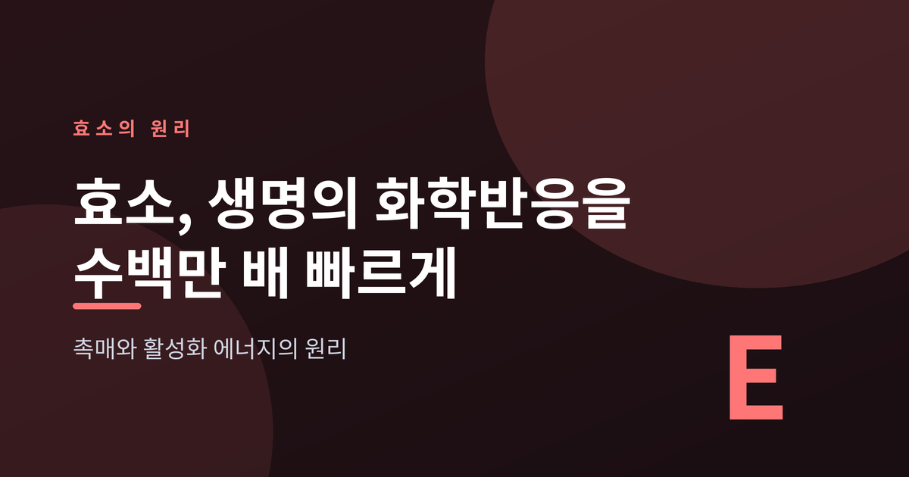
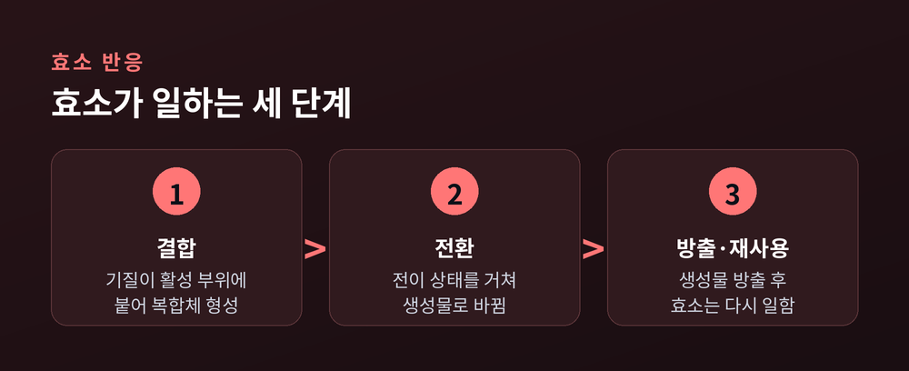
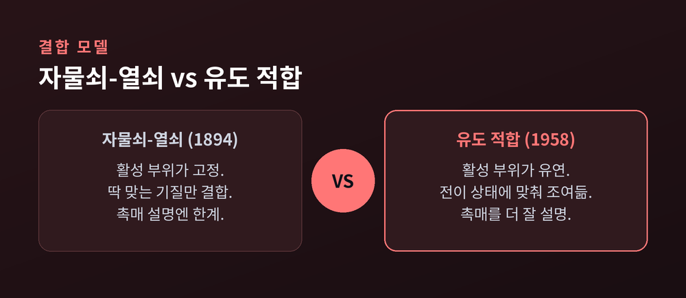
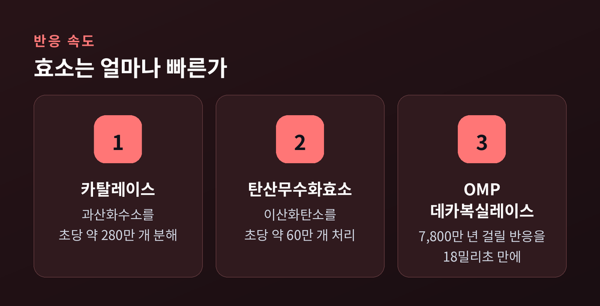
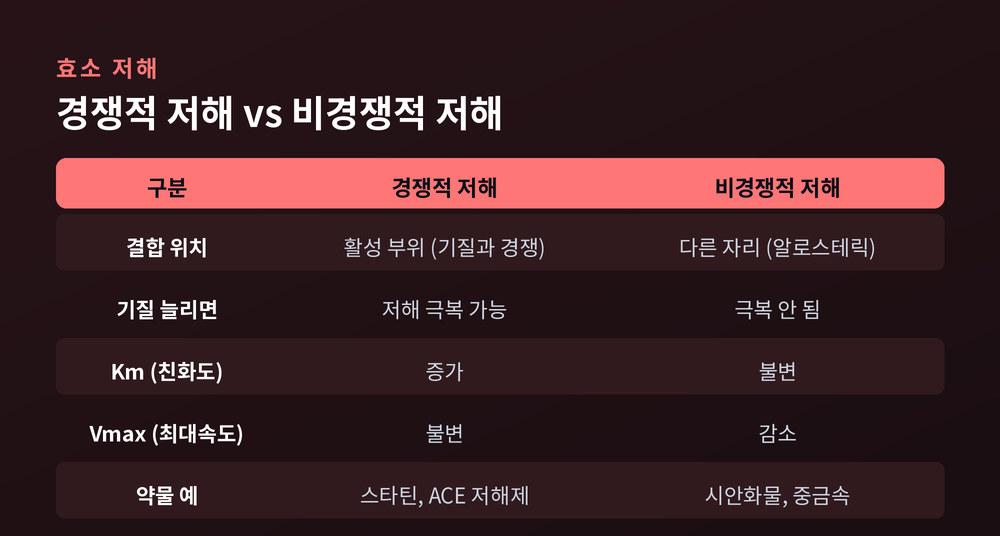
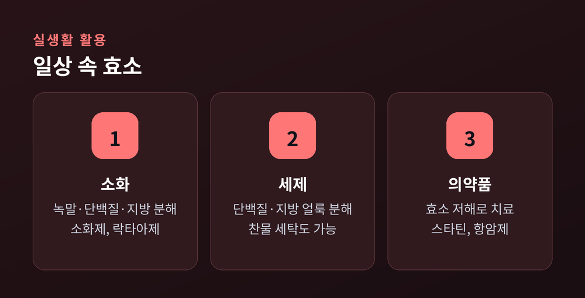

이번 글에서는 효소가 어떻게 생명의 화학반응을 그토록 빠르게 만드는지 정리해 보겠습니다.
핵심만 먼저 말씀드립니다. 효소는 스스로 소모되지 않으면서 반응을 돕는 생체 촉매입니다. 그 비결은 반응이 넘어야 할 에너지 장벽, 곧 활성화 에너지를 낮추는 데 있습니다. 장벽이 낮아지면 같은 반응이 수천 배에서 수백만 배까지 빨라집니다.
아래에서 그 원리를 하나씩 풀어 보겠습니다.

먼저 오해 하나를 짚고 가겠습니다.
효소는 반응을 억지로 밀어붙이는 힘이 아닙니다. 효소는 반응이 더 쉽게 일어나도록 길을 바꿔주는 존재입니다.
촉매의 정의부터 보겠습니다. 촉매란 반응 속도를 높이되, 반응이 끝난 뒤에도 자신은 소모되거나 변하지 않는 물질입니다. 효소가 바로 그렇습니다.
기질과 결합해 일을 마치면, 효소는 생성물을 내보내고 원래 모습으로 돌아옵니다. 그리고 다시 새로운 기질과 결합합니다. 한 분자가 같은 일을 몇 번이고 반복하는 셈입니다.
여기서 기질(基質)은 효소가 작용하는 대상 물질을 말합니다. 효소가 열쇠라면 기질은 그 열쇠가 여는 문인 셈이지요.
세포 안에서는 수천 가지 화학반응이 쉬지 않고 일어납니다. 그런데 이 반응들은 그냥 두면 생명을 유지하기엔 터무니없이 느립니다. 효소가 없다면 우리는 밥 한 끼를 소화하는 데도 감당 못 할 시간이 필요할 것입니다.
예전엔 촉매를 그저 '반응을 빠르게 하는 물질' 정도로 뭉뚱그려 이해했습니다. 지금은 그 '빠르게'의 정체가 활성화 에너지에 있다는 것을 압니다.
화학반응에는 시작 문턱이 있습니다.
반응물이 생성물로 바뀌려면 잠깐 아주 불안정한 중간 상태를 거쳐야 합니다. 이를 전이 상태라 부릅니다. 이 언덕의 높이가 바로 활성화 에너지입니다.
언덕이 높으면 넘어가는 분자가 적어 반응이 느립니다. 언덕이 낮으면 많은 분자가 쉽게 넘어가 반응이 빨라집니다.
효소가 하는 일이 정확히 이것입니다. 효소는 더 낮은 언덕을 지나가는 새 길을 열어 줍니다. 특히 저 불안정한 전이 상태를 감싸 안아 안정시킵니다. 전이 상태가 안정되면 넘어야 할 문턱이 낮아지고, 반응은 빠르게 진행됩니다.
여기서 꼭 기억할 점이 하나 있습니다.
“효소는 도착 지점을 바꾸지 않는다. 도착하는 속도만 바꾼다.”
무슨 뜻일까요. 효소는 반응물과 생성물 사이의 에너지 차이, 즉 반응의 최종 방향이나 평형 자체는 건드리지 않습니다. 일어날 반응을 더 빨리 일어나게 할 뿐, 일어나지 않을 반응을 억지로 만들어 내지는 않습니다.
효소가 기질과 만나 일하는 과정은 대략 세 단계로 나뉩니다.

기질은 먼저 효소의 특정 부위에 자리를 잡습니다. 이 부위를 활성 부위라 합니다. 기질이 활성 부위에 붙으면 효소-기질 복합체가 만들어지고, 그 안에서 반응이 진행됩니다. 반응이 끝나면 생성물은 떨어져 나가고 효소는 다시 비워집니다.
효소가 아무 물질과 결합하지는 않습니다. 각 효소는 정해진 기질에만 작용합니다. 이를 특이성이라 부릅니다.
이 특이성을 설명하는 두 모델이 있습니다.
첫째는 자물쇠-열쇠 모델입니다. 1894년 에밀 피셔가 제안했습니다. 활성 부위의 모양이 고정되어 있고, 딱 맞는 기질만 열쇠처럼 들어맞는다는 그림입니다. 직관적이지만 한계가 있습니다. 기질이 너무 완벽하게 들러붙으면 오히려 복합체가 지나치게 안정돼, 반응이 잘 일어나지 않을 수 있습니다.
둘째는 유도 적합 모델입니다. 1958년 대니얼 코실랜드가 제안했습니다. 활성 부위가 딱딱한 자물쇠가 아니라 유연한 장갑에 가깝다는 관점입니다. 기질이 다가오면 효소가 모양을 슬쩍 바꿔 더 꼭 맞게 감쌉니다.
이 미묘한 차이가 중요합니다. 유도 적합 모델에서 활성 부위는 기질 그 자체보다 전이 상태에 더 잘 맞도록 조여듭니다. 앞서 말한 전이 상태 안정화가 바로 여기서 일어납니다. 그래서 오늘날 효소의 촉매 작용은 유도 적합 모델로 설명하는 편이 더 정확하다고 봅니다.

자물쇠-열쇠가 틀렸다는 말은 아닙니다. 이해의 출발점으로는 여전히 훌륭합니다. 다만 실제 촉매의 정밀함까지 담기에는 조금 부족할 뿐입니다.
"수백만 배"라는 표현이 다소 극적으로 들릴 수 있습니다. 그러나 실제 수치를 보면 오히려 겸손한 표현입니다.
카탈레이스라는 효소는 한 분자가 1초에 과산화수소 약 280만 개를 물과 산소로 분해합니다. 알려진 효소 가운데 처리 속도가 가장 빠른 축에 듭니다.
혈액 속 탄산무수화효소는 1초에 이산화탄소 약 60만 개를 처리합니다. 우리가 숨 쉴 때 이산화탄소가 빠르게 옮겨지는 데 이 효소가 관여합니다.
가장 극적인 예는 OMP 데카복실레이스입니다. 이 효소가 돕는 반응은 촉매가 없으면 반감기가 무려 7,800만 년입니다. 그런데 효소의 활성 부위에서는 같은 반응이 18밀리초 만에 끝납니다. 속도 향상 폭이 약 10의 17제곱 배에 이릅니다.

숫자의 크기보다 그 의미가 놀랍습니다. 수천만 년이 걸릴 일을 눈 깜짝할 사이에 해내는 것, 그것이 생명이 매 순간 유지되는 방식입니다.
효소의 속도를 정량으로 다루는 틀이 미카엘리스-멘텐 모델입니다. 이름은 어렵지만 개념은 단순합니다.
기질이 적을 때는 기질을 더 넣을수록 반응이 빨라집니다. 그러나 기질이 충분히 많아지면 효소가 이미 쉴 틈 없이 일하는 상태가 됩니다. 이때는 기질을 더 부어도 속도가 늘지 않습니다. 이 한계 속도를 Vmax(최대 속도)라 합니다.
Km은 반응 속도가 Vmax의 절반에 이르는 기질 농도입니다. 조금 더 풀어 보겠습니다. Km이 낮을수록 효소는 적은 기질로도 빠르게 일합니다. 즉 기질에 대한 친화도가 높다는 뜻입니다.
식당에 비유하면 이렇습니다. Vmax는 주방이 낼 수 있는 최대 접시 수, Km은 주방이 절반 속도로 돌아가게 하는 손님 수입니다. 솜씨 좋은 주방일수록 적은 손님으로도 금세 바빠집니다.
효소는 조건에 예민합니다.
온도가 오르면 분자들이 활발히 부딪혀 반응이 빨라집니다. 하지만 일정 선을 넘으면 열이 효소의 3차원 구조를 망가뜨립니다. 이를 변성이라 합니다. 한번 변성된 효소는 대개 제 기능을 잃습니다. 사람 몸속 효소가 대체로 37℃ 부근에서 가장 잘 작동하는 데는 이런 이유가 있습니다.
pH도 마찬가지입니다. 각 효소에는 저마다 최적 pH가 있습니다. 위에서 단백질을 분해하는 펩신은 pH 2 정도의 강산에서 가장 활발합니다.
흥미로운 것은 보조인자와 조효소입니다. 많은 효소는 단백질만으로는 일하지 못하고 도우미 분자가 필요합니다. 철 같은 무기 이온이 보조인자이고, 유기 분자가 조효소입니다.
그런데 이 조효소의 상당수가 비타민이거나 비타민에서 만들어집니다. 우리가 비타민을 꾸준히 먹어야 하는 생화학적 이유가 여기 있습니다. 비타민은 그 자체로 힘을 내기보다, 효소가 제 일을 하도록 곁에서 돕는 조력자에 가깝습니다.
효소를 늦추거나 멈추는 물질을 저해제라 합니다. 크게 두 방식이 있습니다.
경쟁적 저해는 기질과 모양이 비슷한 물질이 활성 부위를 두고 경쟁하는 경우입니다. 가짜 열쇠가 자물쇠를 먼저 차지하는 셈입니다. 이때는 진짜 기질을 많이 넣어 주면 경쟁에서 이겨 저해를 극복할 수 있습니다.
비경쟁적 저해는 다릅니다. 저해제가 활성 부위가 아닌 다른 자리에 붙어 효소의 모양 자체를 바꿔 버립니다. 이 경우엔 기질을 아무리 늘려도 소용이 없습니다.

이 원리는 의약품 설계의 핵심입니다. 콜레스테롤 합성 효소를 막는 스타틴, 혈압을 낮추는 ACE 저해제, 세포 분열을 억제하는 메토트렉세이트가 모두 효소 저해의 원리를 이용합니다. 병을 일으키는 효소를 조용히 멈추는 것, 그것이 수많은 약이 작동하는 방식입니다.
효소는 실험실 밖 일상에도 깊이 들어와 있습니다.
우리 몸의 소화효소가 먼저입니다. 아밀레이스는 녹말을, 펩신과 트립신은 단백질을, 라이페이스는 지방을 잘게 쪼갭니다. 소화가 잘 안 될 때 먹는 소화제나, 유당불내증에 쓰는 락타아제도 같은 원리입니다.
세탁 세제에도 효소가 들어갑니다. 옷에 밴 단백질, 녹말, 지방 얼룩을 효소가 분해합니다. 덕분에 찬물에서도 때가 잘 빠지고, 그만큼 에너지도 아낄 수 있습니다.

이 밖에도 효소는 식품 가공, 환경 정화, 제지와 섬유 산업까지 폭넓게 쓰입니다. 눈에 띄지 않지만, 우리 생활 곳곳에서 조용히 일하고 있는 셈입니다.
정리하면 이렇습니다.
효소는 반응의 결말을 바꾸는 존재가 아닙니다. 다만 그 길을 낮고 부드럽게 다듬어, 수천만 년이 걸릴 일을 순식간에 해냅니다.
“생명은 기다리지 않는다. 효소가 그 시간을 벌어 준다.”
다음에 밥을 먹거나 세제로 빨래를 하실 때, 눈에 보이지 않는 이 작은 촉매들이 쉼 없이 일하고 있다는 사실을 잠깐 떠올려 보시면 좋겠습니다.